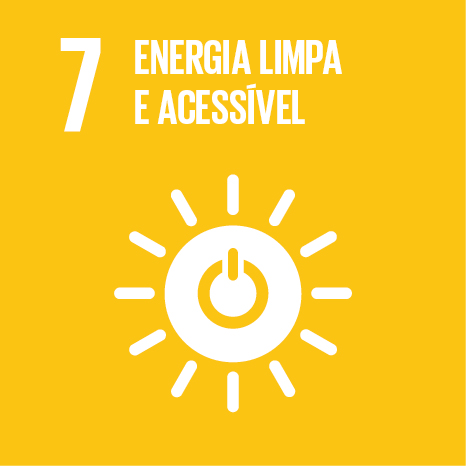
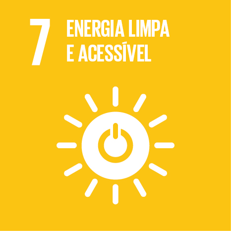

Os Objetivos de Desenvolvimento Sustentável
Os 17 ODS envolvem temáticas diversificadas como erradicação da pobreza, segurança alimentar e agricultura, saúde, educação, igualdade de gênero, redução das desigualdades, energia, água e saneamento, padrões sustentáveis de produção e de consumo, mudança do clima, cidades sustentáveis, proteção e uso sustentável dos oceanos e dos ecossistemas terrestres, crescimento econômico inclusivo, infraestrutura e industrialização, governança, e meios de implementação. Durante os anos de implementação da Agenda 2030, os ODS e suas metas estimulam e apoiam ações em áreas de importância crucial para a humanidade: Pessoas, Planeta, Prosperidade, Paz e Parcerias.


 
